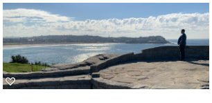
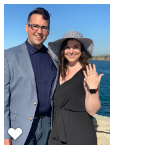

The last half of May, 2019 were the best 2 weeks of my life.
This is the story of how I proposed to my now-fiance, Brea.
St. Louis to L.A.
First, there was the afternoon flight from St. Louis to L.A..
I had about a 4 hour layover until i kicked off the exciting 15 hour flight to Sidney, Australia.
The people at the L.A airport arent the nicest humans around, but i was able to deal with it for the short time I was there.
L.A. to Sidney
This trip was every bit of LONG. 15 straight hours over the ocean was sort of tough on my mind as well.
Knowing that there is literally no land until the destination. I sat next to a guy that was just on holiday
from Australia, and he chose to go to Las Vegas and L.A.. He complained about how America just wants to take
your money and sets poor examples for Americans from the start, stating that there are casinos as soon as you
get off the plane at the airport. I thought his comments were funny because he chose to go to the two main places
in the US that are literally there to take your money and put it in someone else's pocket.
Sidney
Everyone has always asked me if I was nervous. I always reply yes, but not because I was nervous to propose.
I replied yes because of that long flight and making sure the ring stayed in my pocket throughout the entire trip.
When I landed in Sidney, the first thing I noticed was that the people were so nice, and genuinely wanted to learn about me.
While sitting on a bench waiting for my uber, I sat next to an Australian man covered in tattoos, with a bald head, and from
looking at him it seemed like he would kick my ass if I said hello. Turns out the guy was just a big teddy bear, he started
to tear up when I told him why I came to Australia. I will never forget this moment and he so badly wanted to follow me to the
park to watch the proposal take place.

The Proposal
May 22, 2019 in Sidney, or May 23, 2019 in America was
the best day of my life. I got off of my uber and Brea's
sister, Mikayla's, boyfriend Brady was there to greet me
at the apartment. I was able to get cleaned up and throw
my suit on and prepare a little bit.Brady had already been
in Australia for 5 months so he knew the way of the land.
He got us to the destination as we patiently waited
for Brea and her family cross paths with us during their
family walk at the Bondi Coastal Walk, just outside of Sidney.
I finally saw Brea at the bottom of the stairs, which apparently
she was not so thrilled about. Mikayla, her sister, told her she
has to do her hair, makeup, and dress "pretty" for the HIKE they
went on. This wasn't just a walk in the park and I did feel a little
guilty when I looked at the shoes she was wearing.Brea noticed I was
at the top of the stairs and her eyes lit up like I've never seen before.
She looked absolutely stunning, and i was about to ask her to be my wife!
She was still absolutely clueless I was about to propose. We stood in the
center of the most beautiful part of the Coastal Walk as I got down on one
knee and asked Brea to marry me. She said yes! She was so excited she grabbed
the ring, put it on and said "Thaaaaaaaaanks" before I got a chance to put it
on her. We laugh about that still and probably will forever. We took many pictures,
finished the hike, and even found a stone that had "forever love" etched into it
and got some great pictures with that. The rest of our time spent in Australia was
absolutely wonderful, and I can't wait to go back one day.
